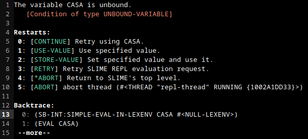
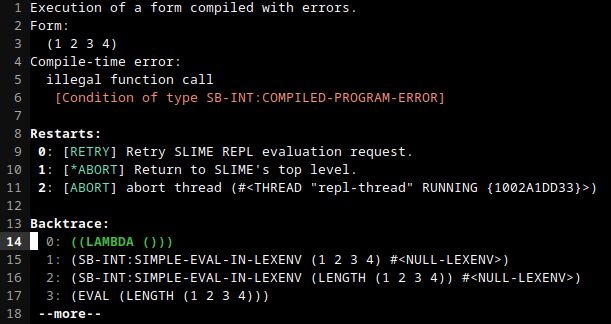

El código de Common Lisp son objetos
Introducción
Lo normal de cualquier lenguaje de programación es tener dos partes bien diferenciadas: Por un lado tenemos los datos, y por otro lado tenemos la sintaxis del lenguaje. La sintaxis es lo que define el lenguaje como tal, y nos dice qué debemos escribir para manipular los datos.
Sin embargo, en Common Lisp los datos y la sintaxis son uno. Más concretamente, la sintaxis de Common Lisp es la representación 'impresa' de los objetos de Common Lisp. Por ejemplo, el objeto 5 tiene su representación 'impresa' como el caracter '5'. Y como es un objeto de Common Lisp con una representación impresa podemos usarlo en nuestro código. Es decir, si tienes un fichero '~/prueba.lisp' puedes usar el 5 como código.
;;; ~/prueba.lisp 5
El fichero '~/prueba.lisp' contiene código válido. Pero claro, un 5 no va a hacer nada.
Recuerda que la definición de una función que imprima "Hello world!" podía ser así:
(defun hello-world () (princ "Hello world!"))
Pero si esto es código y acabamos de decir que el código es, en realidad, objetos, entonces quiere decir que lo que acabo de escribir es la representación 'impresa' de algún objeto de Common Lisp. Y por tanto, podría guardar ese objeto en una variable, por ejemplo. Pues sí, así es. Es más, aquí tienes el código (es decir, otro objeto de Common Lisp) para definir una variable que contenga el código anterior:
(defvar hello-world-code '(defun hello-world () (princ "Hello world!")))
HELLO-WORLD-CODE
Y si intento usar la variable:
hello-world-code
(DEFUN HELLO-WORLD () (PRINC "Hello world!"))
¡Tachán!
Objetos legibles
Estos objetos que hemos dicho que pueden usarse en el código en realidad se denominan objetos legibles. Y por si te lo estás preguntando, también hay objetos no legibles en Common Lisp (es decir, no podemos usarlos como código).
Un ejemplo rápido de un objeto no legible son las tablas hash. Para crear una tabla hash en Common Lisp usamos la función make-hash-table:
(make-hash-table)
#<HASH-TABLE :TEST EQL :COUNT 0 {1002C88293}>
Ya sólo de ver qué ha impreso el REPL podemos darnos cuenta de porqué eso es un objeto no legible. Aunque sí se indique el tipo del objeto, una tabla hash nunca va a imprimir los objetos que contiene. Además, fíjate que el número que hay entre llaves podría ser perfectamente una dirección de memoria al objeto de la tabla hash. Cada vez que se inicie un programa esa dirección de memoria será diferente, por lo que no tiene sentido escribir todo ese chorro en el código (Si lo intentas, saltará un error prácticamente siempre. No dará un error mientras estés en la misma sesión en el que se creó esa tabla hash.).
Es claro que los objetos no legibles ya no tienen mayor interés en lo que nos concierne ahora mismo. Centrémonos en los que sí son legibles. Entre los objetos legibles más comúnmente usados encontramos los siguientes:
- Números:
5,6/7,-5.6, … - Caracteres:
#\a,#\b,#\5,#\+, … - Cadenas de texto:
"Hola","Que tal", … - Símbolos:
pi,casa,+,char>, … - Listas:
(),(1 2 3 4),(hola 5 "Hola"),(defun hello-world () (princ "Hello world!")), …
Hay más, pero con estos nos sobra. Ya conocemos los números, los caracteres y las cadenas de texto. Adicionalmente, he añadido los símbolos y las listas. Los símbolos, intuitivamente, son como los identificadores en cualquier lenguaje de programación, y los usamos para asociarles algún valor o función. Por otro lado, las listas son un conjunto de objetos puestos entre paréntesis y separados por al menos un espacio. Aquí ya te habrás dado cuenta de que has estado usando símbolos y listas desde que empezaste a usar Common Lisp.
Pero, ¿cuál es la clave de todo esto? Está muy bien saber que son objetos, pero al final los estamos usando como código y ya está, ¿no? ¿Qué nos aporta saber todo esto? Pues aquí es donde está toda la magia de Common Lisp: Los objetos se evalúan, y tenemos el control total de cuándo lo tienen que hacer.
Evaluar o no evaluar, esa es la cuestión
Cuando decimos que evaluamos un objeto nos referimos a que vamos a obtener otro objeto a partir de él. El cómo se evalúa un objeto depende de su tipo. Es decir, no es lo mismo evaluar un número que evaluar un símbolo.
Para evaluar los objetos utilizamos el REPL. Cada vez que escribimos una expresión en el REPL, éste lo evalúa y nos devuelve otro objeto. Es lo que hemos estado haciendo continuamente hasta ahora.
Comencemos con los tipos más básicos. ¿Qué ocurre cuando evaluamos un número como 7? Vamos a comprobarlo.
7
7
Al evaluar el número 7 obtenemos el mismo número. Es decir, los números enteros se evalúan a sí mismos. Lo mismo ocurre con los números en coma flotante.
7.65
7.65
Y también con los caracteres o los strings.
"Hola mundo!"
"Hola mundo!"
Un ejemplo de número que no se evalúa a sí mismo son las fracciones no irreducibles.
2/4
1/2
Las fracciones no irreducibles se evalúan a su fracción irreducible equivalente.
Hasta ahora nada impresionante, pero la cosa se pone interesante cuando queremos evaluar los símbolos. Un símbolo, que es un objeto, tiene cierta información asociada y, en particular, puede tener asociado un valor. Pues cuando evaluamos un símbolo, obtenemos dicho valor asociado. Si el símbolo no tiene ningún valor asociado, se genera un error. Por ejemplo, podemos intentar evaluar el símbolo casa:
casa

Figura 1: Error evaluando un símbolo
Por el contrario, podemos usar el símbolo pi que sí tiene un valor asociado:
pi
3.141592653589793d0
Pasemos ahora a las listas. La evaluación de una lista es un proceso un poco más complejo. Lo que hace Common Lisp es, primero, comprobar el primer elemento de dicha lista. Si el primer elemento no es un símbolo, se genera un error (excepto si es una expresión lambda). Por ejemplo, podemos intentar evaluar la lista (1 2 3 4).
(1 2 3 4)

Figura 2: Error evaluando una lista
Por otro lado, si el primer elemento de la lista es un símbolo, Common Lisp se preguntará ahora si dicho símbolo tiene una función asociada (o una macro o un operador especial). Es por eso que en el error anterior Common Lisp nos dice que hemos intentado evaluar la función 1 cuando 1 no es una función. Por ejemplo, el símbolo + tiene una función asociada, y por tanto podemos evaluar una lista donde esté este símbolo al inicio.
(+ 1 2 3)
6
En este caso, la lista (+ 1 2 3) se evalúa al objeto 6, que es el resultado de sumar 1, 2 y 3. Recordemos que también podemos evaluar expresiones como la siguiente:
(+ 1 (+ 2 3) 4)
10
Lo que hace Common Lisp cuando se encuentra con una lista donde su primer elemento es un símbolo con una función asociada es:
- Evalúa de izquierda a derecha todos los argumentos de la función. En este caso se evalúa el
1(se evalúa a sí mismo), seguidamente se evalúa(+ 2 3)(que se evalúa a5), y por último se evalúa el4(a sí mismo). - Se evalúa la lista con los argumentos evaluados. En este caso, se evalúa la lista
(+ 1 5 4)al valor10.
Consideremos ahora el símbolo length que también tiene una función asociada. Esta función debe recibir una lista y devolverá la cantidad de elementos que tiene. Imagina entonces que queremos obtener el número de elementos que hay en la lista (1 2 3 4). Podemos entonces pensar que basta con evaluar lo siguiente:
(length (1 2 3 4))

Figura 3: Error evaluando una lista
Pero recuerda que length es una función y, por tanto, Common Lisp va a intentar evaluar todos sus argumentos. En este caso, se ha intentado evaluar la lista (1 2 3 4), pero como 1 no es una función, obtenemos el mismo error que ya obtuvimos antes.
¿Qué hacemos entonces? ¿Cómo le pasamos la lista, sin que se evalúe, a la función length? Para eso tenemos que hablar de quote. Este símbolo tiene un operador especial asociado. Un operador especial es como una función, podemos usar ese símbolo al inicio de una lista, pero en lugar de evaluar todos los argumentos, algunos se evaluarán, y otros no. Depende de cada operador especial qué argumentos se evaluarán y cuáles no. En particular, quote sólo recibe un argumento, no lo evalúa y, simplemente, lo devuelve.
Por ejemplo, podemos pasar un 5 a quote:
(quote 5)
5
El 5 no se evalúa y se devuelve. Aunque tampoco hay mucha diferencia a lo que ocurría cuando no usamos quote. Probemos con el símbolo casa:
(quote casa)
CASA
Recuerda que casa no tenía ningún valor asociado, por lo que obteníamos un error al intentar evaluarlo. Como quote no evalúa su argumento, eso no ocurre.
Probemos ahora con la lista (+ 1 2 3):
(quote (+ 1 2 3))
(+ 1 2 3)
De nuevo, quote no evalúa la lista y directamente la devuelve. Observa que, en cierta manera, lo que estamos haciendo es desactivar la evaluación.
Volviendo a la función length, queremos que reciba una lista. En nuestro intento fallido, escribir directamente la lista suponía que ésta se iba a evaluar. Y lo que queremos es que esa lista no se evalúe. Necesitamos desactivar su evaluación. Pues entonces sólo tenemos que usar quote:
(length (quote (1 2 3 4)))
4
¡Perfecto!
Esta operación, la de desactivar la evaluación con quote, es tan común, que se usa una notación diferente para referirnos a quote. Se usa una comilla simple para indicar que queremos desactivar la evaluación:
(length '(1 2 3 4))
4
Esta comilla simple es exactamente lo mismo que quote. Puedes usar indistintamente una u otra. Claro está, que es más rápido, cómodo y legible usar '. Por si tienes curiosidad, esta comilla simple es lo que en Common Lisp se llama una reader macro. Estos caracteres se sustituyen durante el proceso de lectura por un objeto de Common Lisp. En este caso, la comilla simple junto con un objeto, por ejemplo, 'x, se sustituye por (quote x). Pues puedes incluso crear tus porpias reader macros con set-macro-character .
Conclusión
Entender que el código de Common Lisp son en realidad objetos es clave para dominar el lenguaje. Todo se basa en qué se evalúa y qué no se evalúa.
Hemos visto que quote nos permite 'desactivar' la evaluación de un objeto de Common Lisp. En realidad, recordemos que lo único que hace es devolver su primer argumento sin evaluarlo, no se está desactivando nada.
Pues si las funciones evalúan todos sus argumentos y los operadores especiales van un poco a su rollo, también tenemos las macros, que no evalúan ninguno de sus argumentos, pero sí el objeto devuelto. La mezcla de funciones, operadores especiales y macros es lo que le da poder y magia a este lenguaje. Y si los operadores especiales y las macros pueden existir, es gracias al hecho de que todo son objetos,y éstos pueden o no evaluarse.
:D